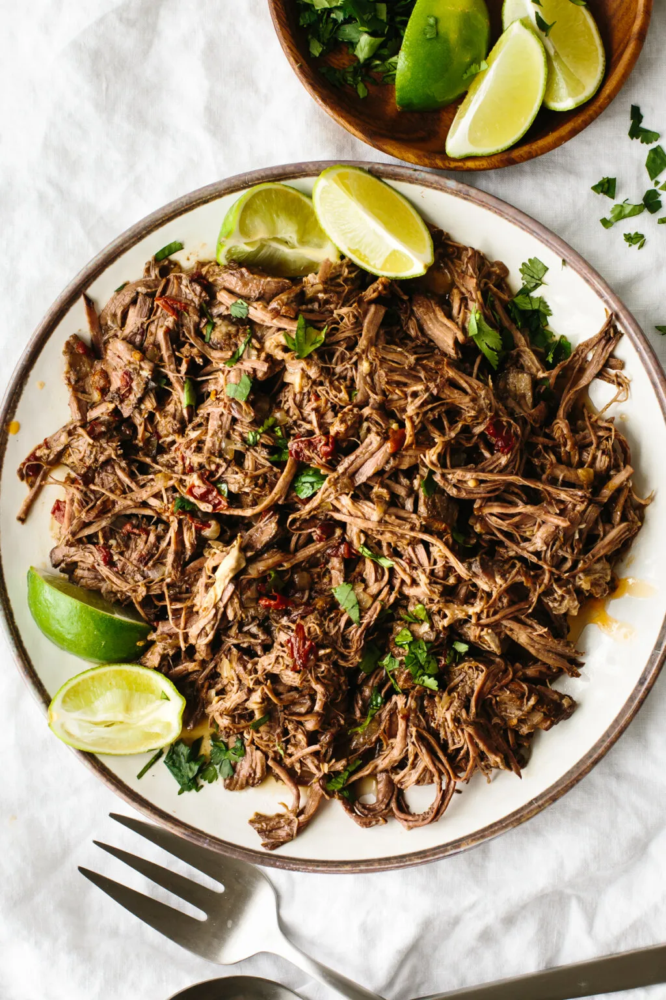

Home
Beef Barbacoa

We're keeping barbacoa as simple as possible today.
This homemade style comes without digging any holes in your backyard. We've got the meatiest, juiciest barbacoa you can make, all while staying the comforts of your own kitchen.
Supplies used:
- Parchment paper
- Dutch oven
Serves: 4-6
Ingredients
Meat
- 2lb beef brisket
- 2lb beef cheeks
- salt
- 475ml beef stock
- 8 garlic cloves, peeled & smashed
- 5g ground cumin
- 3 bay leaves
- 1 cinnamon stick
- 1/4 cup water
Additional
- 6-10 Tortillas
- salsa verde
- 1 White onion
- Coriander leaf (to taste%#41
- Limes (to taste%#41
Method
Meat method
- Cut meat into 3-inch chunks. Season with salt
- Heat a heavy-bottomed pot over medium-high heat. Add vegetable oil just to coat the bottom.
- Add beef in batches. Sear for 2-3 minutes per side. Set to the side and repeat with the remaining pieces.
- Turn off the heat and add meat chunks back to the pot. Add in beef stock, garlic cloves, ground cumin, bay leaves, cinnamon stick, and water.
- Bring up to a boil over medium-high. Immediately reduce to low and simmer.
- Add parchment paper layer on top followed by the lid.
- Place pot in a 300F preheated oven for 4-6 hours.
- Remove from the oven and place in a roasting pan. Finely shred using forks. Season with salt to taste.
Assembly
- Heat a tortilla.
- Add a generous amount of meat topped with salsa.
- Top with onions, and chopped coriander leaf with a lime wedge on the side.